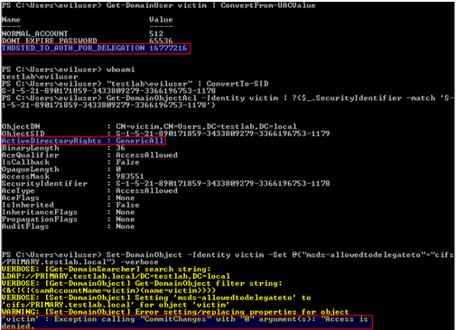

SeEnableDelegationPrivilege
One user right I overlooked, until Ben Campbell’s post on constrained delegation, was SeEnableDelegationPrivilege. This right governs whether a user account can “Enable computer and user accounts to be trusted for delegation.” Part of the reason I overlooked it is stated right in the documentation: “There is no reason to assign this user right to anyone on member servers and workstations that belong to a domain because it has no meaning in those contexts; it is only relevant on domain controllers and stand-alone computers.” So this right applies to the domain, not the local domain-joined machine.
Ben explained how SeEnableDelegationPrivilege factors into constrained delegation. This was a missing piece of the whole puzzle for me. We both first thought that this right only governed the modification of the TRUSTED_FOR_DELEGATION and TRUSTED_TO_AUTHENTICATE_FOR_DELEGATION flags- this would have opened up a nifty attack that Ben outlined. Unfortunately for us attackers, it appears that this right also controls the modification of the msDS-AllowedToDelegateTo property, which contains the targets for constrained delegation. If this is unclear, check out the post from last week for more background on constrained delegation.
TL;DR we can’t modify delegation specific user account control settings NOR the msDS-AllowedToDelegateTo field for targets (even if we have full control of the object) if we don’t have the SeEnableDelegationPrivilege right:
